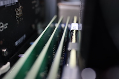
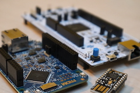

|
東京大学
〒113-8656 東京都文京区本郷7-3-1 |
「JavaScriptエンジンの実装技術」[スライド]
プログラミング言語とその処理系の研究をしています． JavaやJavaScriptなどのマネージド言語の実行系に 興味があり，特にガベージコレクションやハードウェア の特性に合わせた効率化に興味があります． 様々な角度から安全で効率のよい実行系を作る技術の研究をしています．
|  | 突然電源が切れてもメモリ上のデータが失なわれない Java 仮想機械を目指しています． メインメモリに不揮発性メモリ（NVM）を使ったシステムでは， 電源が失われても NVMに書き込んだデータを保持することができます． しかし，データ構造を更新する一連の書込みの途中で電源が切れる可能性があり， NVM 上のデータを常に整合性がとれた状態にしておくのは至難の業です． キャッシュメモリから書き戻されたデータだけが NVM に書き込まれることや， マルチスレッドアプリケーションでは複数のスレッドが並行して NVM 上のデータにアクセスする可能性があることを考慮すると，なおさらです． この研究では，マネージド言語である Java を対象に，オブジェクトを NVM 上に配置して，突然電源が切れても再起動後に復元できる仕組みを開発しています． いつ電源が切れても復元できるよう，NVM 上のデータがどの瞬間も不整合な状態にならないことを保証しつつ， 性能を稼ぐのが難しいところです． |
| IoT 向けのマイコンなどの組込みシステム（100 KB〜のメモリを想定）で動作する JavaScript インタプリタ eJS を開発しています．このインタプリタを使えば，JavaScriptのプログラム をそのままマイコンで実行できます． 組込みシステムは一般にメモリが少なく実行速度も遅いですが， 個々のシステムで実行されるプログラムは固定されている傾向があります． ブラウザの JavaScript エンジンは， どのようなプログラムでも実行できるようにするために仕組みが複雑になりがちです． eJS は対象のシステム毎に， そのシステムやそこで実行するプログラムに特化したインタプリタを自動生成します． このとき，不要な機能を削ぎ落し，使う機能だけが高速に動作するインタプリタを生成します． |  |